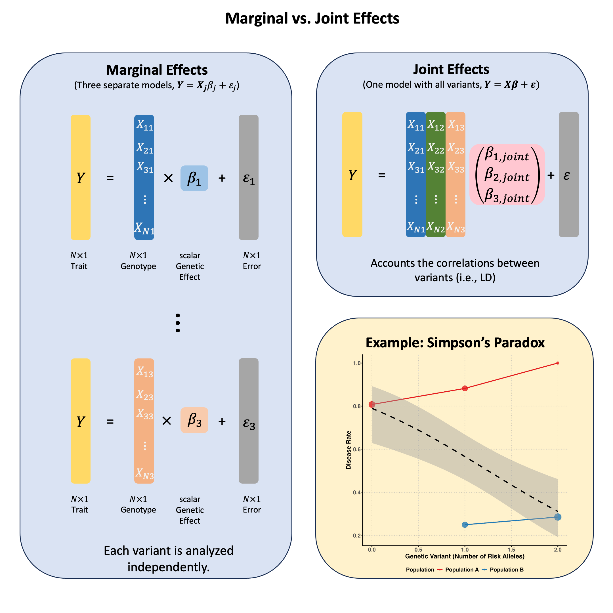

Marginal and Joint Effects#
Marginal effects measure a genetic variant’s influence on a trait when considered alone, ignoring other variants; while joint effects measure each variant’s independent contribution when all variants are simultaneously included in the model, revealing their true effects after accounting for correlations (LD) between them.
Graphical Summary#

Key Formula#
In multiple markers linear regression, we extend the single marker model to incorporate multiple genetic variants:
Where:
\(\mathbf{Y}\) is the \(N \times 1\) vector of trait values for \(N\) individuals
\(\mathbf{X}\) is the \(N \times M\) matrix of genotypes for \(M\) variants across \(N\) individuals
\(\boldsymbol{\beta}\) is the \(M \times 1\) vector of effect sizes for each variant (to be estimated)
\(\boldsymbol{\epsilon}\) is the \(N \times 1\) vector of error terms for \(N\) individuals and \(\boldsymbol{\epsilon} \sim N(0, \sigma^2\mathbf{I})\)
We can still use ordinary least squares (OLS) to derive the estimators for \(\boldsymbol{\beta}\) in matrix form:
Technical Details#
Marginal Effect#
In Lecture: ordinary least squares, we discuss the single marker linear regression, which actually estimates the marginal effect of each genetic variant independently. This actually is the marginal effect of variants, because other variants are not considered in the model:
Where \(\mathbf{X}_j\) is the column vector for the \(j\)-th variant.
Joint Effect#
The joint effect of a genetic variant is its association with the trait when analyzed simultaneously with other variants, i.e., in the multiple markers model:
Where \(\hat{\beta}_{\text{joint},j}\) (the \(j\)-th element of \(\hat{\boldsymbol{\beta}}_{\text{joint}}\)) represents the effect of the \(j\)-th variant after accounting for all other variants in the model.
Key Differences Between Marginal and Joint Effects#
Statistical Framework:
Marginal effects: Fit separate simple linear regressions (one predictor per model)
Joint effects: Fit a single multiple linear regression (all predictors in one model) - this is the generalization of OLS from one variable to multiple variables, accounting for the correlations between variables
Interpretation:
Marginal effects: The expected change in the trait associated with a unit change in the variant, regardless of other variants
Joint effects: The expected change in the trait associated with a unit change in the variant, holding all other variants constant
Consistency:
When variants are uncorrelated, marginal and joint effects are identical (\(\hat{\beta}_{\text{marginal}} = \hat{\beta}_{\text{joint}}\)), but joint model still provides advantages:
Better precision: More accurate standard errors from pooled residual variance estimation
Reduced multiple testing: One coherent test instead of many separate tests requiring correction
When variants are correlated, marginal and joint effects will differ
Joint effects can be smaller or larger than marginal effects, or even have opposite signs (see Simpson’s paradox)
Example#
Example 1 – Causal Variant Identification with LD#
When testing genetic variants individually, we might find that multiple variants appear to be associated with the same trait. But are they all true causal variants? Is it possible that only one or a few of the associations are true, and the others are due to the linkage disequilibrium (correlation between nearby variants) with the true causal variants? In this example we first reveal this with a toy example, then use joint analysis to reveal which variant is truly driving the association.
rm(list = ls())
set.seed(9)
# Define genotypes for 20 individuals at 3 variants
# Create correlated genotypes to simulate linkage disequilibrium
N = 20
M = 3
# Generate correlated genotype data
# Variant 1 is the true causal variant
# Variants 2 and 3 are in LD with variant 1
variant1 <- sample(0:2, N, replace = TRUE, prob = c(0.4, 0.4, 0.2))
# Create LD: variants 2 and 3 are correlated with variant 1
variant2 <- ifelse(runif(N) < 0.9, variant1, sample(0:2, N, replace = TRUE))
variant3 <- ifelse(runif(N) < 0.8, variant1, sample(0:2, N, replace = TRUE))
Xraw_additive <- cbind(variant1, variant2, variant3)
rownames(Xraw_additive) <- paste("Individual", 1:N)
colnames(Xraw_additive) <- paste("Variant", 1:M)
# Standardize genotypes
X <- scale(Xraw_additive, center = TRUE, scale = TRUE)
# Generate phenotype where only Variant 1 has a true causal effect
true_beta1 <- 1.5
epsilon <- rnorm(N, mean = 0, sd = 0.5)
Y_raw <- X[, 1] * true_beta1 + epsilon # Only variant 1 affects the trait
# Standardize phenotype
Y <- scale(Y_raw)
Marginal Effects#
We first recall how we calculate the marginal effect of each variant in Lecture: ordinary least squares:
# Calculate marginal effects (one SNP at a time)
p_values <- numeric(M)
betas <- numeric(M)
for (j in 1:M) {
SNP <- X[, j]
model <- lm(Y ~ SNP) # OLS regression: Trait ~ SNP
summary_model <- summary(model)
p_values[j] <- summary_model$coefficients[2, 4]
betas[j] <- summary_model$coefficients[2, 1]
}
marginal_OLS_results <- data.frame(
Variant = colnames(X),
Beta = round(betas, 4),
P_Value = round(p_values, 4),
Significant = p_values < 0.05
)
marginal_OLS_results
| Variant | Beta | P_Value | Significant |
|---|---|---|---|
| <chr> | <dbl> | <dbl> | <lgl> |
| Variant 1 | 0.9416 | 0.0000 | TRUE |
| Variant 2 | 0.4997 | 0.0249 | TRUE |
| Variant 3 | 0.8226 | 0.0000 | TRUE |
Based on the marginal effects, all of them are associated with the trait.
Joint Effects#
Now let’s calculate the joint effects by including all variants in one model:
# Multiple regression model including all variants simultaneously
joint_model <- lm(Y ~ X)
joint_summary <- summary(joint_model)
# Extract the joint effect coefficients and p-values
# Skip the intercept (first row)
joint_betas <- joint_summary$coefficients[2:(M+1), 1]
joint_p_values <- joint_summary$coefficients[2:(M+1), 4]
# Create results table for joint effects
joint_OLS_results <- data.frame(
Variant = colnames(X),
Beta = round(joint_betas, 4),
P_Value = round(joint_p_values, 4),
Significant = joint_p_values < 0.05
)
rownames(joint_OLS_results) <- NULL
joint_OLS_results
| Variant | Beta | P_Value | Significant |
|---|---|---|---|
| <chr> | <dbl> | <dbl> | <lgl> |
| Variant 1 | 1.0253 | 0.0001 | TRUE |
| Variant 2 | 0.0757 | 0.4226 | FALSE |
| Variant 3 | -0.1323 | 0.4886 | FALSE |
Now consider a more realistic scenario: if there are millions of variants (\(M>>N\)) or the LD between variants are very strong, then we might not be able to fit the model \(\mathbf{Y} = \mathbf{X} \boldsymbol{\beta} + \boldsymbol{\epsilon}\) or the joint model might give unstable results.
Typically in practice we can start with the strongest signal from marginal analysis, and then test remaining variants conditioning on the lead SNP, and iteratively identify additional independent signals until no variants exceed the significance threshold.
Conditional Analysis#
Let’s now perform a conditional analysis on our toy data to identify which variant(s) truly drive the association. We’ll use the forward selection procedure:
Step 1: Start with the most significant variant#
Based on the marginal analysis, Variant 1 had the smallest p-value. We select it as our lead variant:
# Identify the lead variant (most significant from marginal analysis)
lead_variant_idx <- which.min(p_values)
lead_variant_name <- colnames(X)[lead_variant_idx]
lead_p_value <- p_values[lead_variant_idx]
cat("=== STEP 1: Lead Variant Selection ===\n")
cat("Selected:", lead_variant_name, "\n")
cat("Marginal p-value:", format(lead_p_value, scientific = TRUE), "\n")
cat("Marginal effect size:", round(betas[lead_variant_idx], 4), "\n\n")
=== STEP 1: Lead Variant Selection ===
Selected: Variant 1
Marginal p-value: 6.077549e-10
Marginal effect size: 0.9416
Step 2: Conditional analysis for remaining variants#
Now we test each remaining variant while holding the lead variant constant. This shows us which additional variants have independent effects:
cat("=== STEP 2: Conditional Analysis ===\n")
cat("Testing remaining variants conditional on", lead_variant_name, "\n\n")
# Test each remaining variant conditioned on the lead variant
remaining_variants_idx <- setdiff(1:M, lead_variant_idx)
conditional_results <- data.frame(
Variant = colnames(X)[remaining_variants_idx],
Marginal_Beta = betas[remaining_variants_idx],
Marginal_P = p_values[remaining_variants_idx],
Conditional_Beta = numeric(length(remaining_variants_idx)),
Conditional_P = numeric(length(remaining_variants_idx)),
Conditional_SE = numeric(length(remaining_variants_idx))
)
for (i in 1:length(remaining_variants_idx)) {
variant_idx <- remaining_variants_idx[i]
# Fit model with lead variant and test variant
X_conditional <- cbind(X[, lead_variant_idx], X[, variant_idx])
model <- lm(Y ~ X_conditional)
summary_model <- summary(model)
# Extract coefficients for the test variant (second column, third row = second coefficient)
conditional_results$Conditional_Beta[i] <- summary_model$coefficients[3, 1]
conditional_results$Conditional_SE[i] <- summary_model$coefficients[3, 2]
conditional_results$Conditional_P[i] <- summary_model$coefficients[3, 4]
}
# Round for display
conditional_results_display <- conditional_results
conditional_results_display$Marginal_Beta <- round(conditional_results_display$Marginal_Beta, 4)
conditional_results_display$Marginal_P <- round(conditional_results_display$Marginal_P, 4)
conditional_results_display$Conditional_Beta <- round(conditional_results_display$Conditional_Beta, 4)
conditional_results_display$Conditional_P <- round(conditional_results_display$Conditional_P, 4)
conditional_results_display$Conditional_SE <- round(conditional_results_display$Conditional_SE, 4)
conditional_results_display
=== STEP 2: Conditional Analysis ===
Testing remaining variants conditional on Variant 1
| Variant | Marginal_Beta | Marginal_P | Conditional_Beta | Conditional_P | Conditional_SE |
|---|---|---|---|---|---|
| <chr> | <dbl> | <dbl> | <dbl> | <dbl> | <dbl> |
| Variant 2 | 0.4997 | 0.0249 | 0.0757 | 0.4151 | 0.0906 |
| Variant 3 | 0.8226 | 0.0000 | -0.1323 | 0.4839 | 0.1848 |
Neither variant 2 or variant 3 are significant anymore (\(p>0.05\))! Variants 2 and 3 were only associated with the trait because they are correlated with the true causal variant (Variant 1). Once we condition on Variant 1, they provide no additional explanatory power.
This demonstrates the power of conditional analysis in causal variant identification: it helps distinguish between true causal effects and spurious associations due to linkage disequilibrium (LD).
Example 2 – Simpson’s Paradox#
Sometimes a genetic variant can appear protective when analyzed alone, but turn out to be detrimental when we account for other factors. This counterintuitive phenomenon is called Simpson’s paradox - where the direction of association completely reverses between marginal and joint analysis.
The key question: How can a genetic variant seem protective overall but actually increase risk when we control for confounding factors?
We’ll simulate a scenario where genetic ancestry acts as a confounder:
rm(list = ls())
set.seed(9)
N <- 100
# Create a confounding variable (genetic ancestry)
ancestry <- rbinom(N, 1, 0.5) # 0 = Population A, 1 = Population B
Different populations have different allele frequencies and Population B has much higher frequency of the “risk” allele.
# Generate genotype that's correlated with ancestry
# Population B has higher frequency of risk allele
variant1 <- ifelse(ancestry == 0,
rbinom(sum(ancestry == 0), 2, 0.2), # Pop A: low risk allele frequency
rbinom(sum(ancestry == 1), 2, 0.8)) # Pop B: high risk allele frequency
# Check allele frequencies by population
cat("Population A (ancestry=0) mean genotype:", round(mean(variant1[ancestry == 0]), 2), "\n")
cat("Population B (ancestry=1) mean genotype:", round(mean(variant1[ancestry == 1]), 2), "\n")
Population A (ancestry=0) mean genotype: 0.35
Population B (ancestry=1) mean genotype: 1.59
Then we generate the disease status where despite having more risk alleles, Population B has much lower disease rates overall.
# Population B has generally lower disease risk (better healthcare/environment)
# But the variant increases risk within each population
baseline_risk <- ifelse(ancestry == 0, 0.8, 0.1) # Pop A much higher baseline risk
true_effect = 0.1
genetic_effect <- true_effect * variant1 # Variant increases risk in both populations
disease_prob <- baseline_risk + genetic_effect
disease <- rbinom(N, 1, pmin(disease_prob, 1)) # Ensure prob ≤ 1
# Create data frame
data <- data.frame(
disease = disease,
variant1 = variant1,
ancestry = ancestry
)
# Check disease rates by population
cat("Population A disease rate:", round(mean(data$disease[data$ancestry == 0]), 2), "\n")
cat("Population B disease rate:", round(mean(data$disease[data$ancestry == 1]), 2), "\n")
Population A disease rate: 0.83
Population B disease rate: 0.28
Marginal Effect of Variant#
First, let’s see what happens when we analyze each population separately:
# Separate data by ancestry
data_ancestry0 <- data[data$ancestry == 0, ] # Population A
data_ancestry1 <- data[data$ancestry == 1, ] # Population B
# Marginal analysis for Population A
marginal_model_A <- glm(disease ~ variant1, data = data_ancestry0, family = binomial)
marginal_OR_A <- exp(coef(marginal_model_A)[2])
# Marginal analysis for Population B
marginal_model_B <- glm(disease ~ variant1, data = data_ancestry1, family = binomial)
marginal_OR_B <- exp(coef(marginal_model_B)[2])
cat("=== WITHIN-POPULATION EFFECTS ===\n")
cat("Population A: OR =", round(marginal_OR_A, 3), "\n")
cat("Population B: OR =", round(marginal_OR_B, 3), "\n")
Warning message:
“glm.fit: fitted probabilities numerically 0 or 1 occurred”
=== WITHIN-POPULATION EFFECTS ===
Population A: OR = 71662028
Population B: OR = 5.014
In both population the variant appears to increase the risk of disease.
Effect of the Variant in the Population#
Then we analyze the data with two ancestries combined:
# Combining both ancestries and perform analysis
model_combined_ancestries <- glm(disease ~ variant1, data = data, family = binomial)
OR_combined_ancestries <- exp(coef(model_combined_ancestries)[2])
p_combined_ancestries <- summary(model_combined_ancestries)$coefficients[2, 4]
cat("=== ESTIMATED EFFECT (combining genetic ancestries) ===\n")
cat("OR =", round(OR_combined_ancestries, 3), ", p =", round(p_combined_ancestries, 4), "\n")
cat("Interpretation:", ifelse(OR_combined_ancestries > 1, "Detrimental ", "Protective"), "\n")
=== ESTIMATED EFFECT (combining genetic ancestries) ===
OR = 0.522 , p = 0.012
Interpretation: Protective
Even though the variant is detrimental in both populations, it appears protective when the ancestry difference between the two populations are not considered. In this case, the genetic ancestry acts as a role of confounder which we will introduce in Lecture: confounder.
Why this happens?
Population B has higher frequency of risk alleles BUT lower baseline disease risk
Population A has lower frequency of risk alleles BUT higher baseline disease risk
Marginally: The variant appears protective because it’s more common in the healthier population
Within each population: The variant actually increases disease risk
Supplementary#
Graphical Summary#
library(ggplot2)
library(dplyr)
# Use the same data from our example
set.seed(42)
N <- 100
ancestry <- rbinom(N, 1, 0.5)
variant1 <- ifelse(ancestry == 0,
rbinom(sum(ancestry == 0), 2, 0.2),
rbinom(sum(ancestry == 1), 2, 0.8))
baseline_risk <- ifelse(ancestry == 0, 0.8, 0.1)
genetic_effect <- 0.1 * variant1
disease_prob <- baseline_risk + genetic_effect
disease <- rbinom(N, 1, pmin(disease_prob, 1))
# Create data frame with proper labels
plot_data <- data.frame(
variant = variant1,
disease = disease,
ancestry = factor(ancestry, levels = c(0, 1), labels = c("Population A", "Population B"))
)
# Calculate summary statistics for each group
summary_stats <- plot_data %>%
group_by(ancestry, variant) %>%
summarise(
disease_rate = mean(disease),
n = n(),
.groups = 'drop'
)
# Create the plot
p <- ggplot(summary_stats, aes(x = variant, y = disease_rate)) +
# Points for each ancestry group
geom_point(aes(color = ancestry, size = n), alpha = 0.8) +
geom_line(aes(color = ancestry, group = ancestry), linewidth = 1.2) +
# Overall trend line (ignoring ancestry)
geom_smooth(data = plot_data, aes(x = variant, y = disease),
method = "glm", method.args = list(family = "binomial"),
se = TRUE, color = "black", linetype = "dashed", linewidth = 1.5) +
scale_color_manual(values = c("Population A" = "#E31A1C", "Population B" = "#1F78B4")) +
scale_size_continuous(range = c(3, 8), guide = "none") +
scale_x_continuous(breaks = 0:2) + # Only show integer labels
labs(
x = "Genetic Variant (Number of Risk Alleles)",
y = "Disease Rate",
color = "Population"
) +
theme_minimal() +
theme(
text = element_text(size = 14, face = "bold"),
plot.title = element_blank(),
axis.text = element_text(size = 14, face = "bold"),
axis.title = element_text(size = 16, face = "bold"),
legend.text = element_text(size = 14, face = "bold"),
legend.position = "bottom", # Position legend at the bottom
panel.grid.major = element_line(color = "gray", linetype = "dotted"),
panel.grid.minor = element_blank(),
axis.line = element_line(linewidth = 1),
axis.ticks = element_line(linewidth = 1),
panel.background = element_rect(fill = "transparent", color = NA),
plot.background = element_rect(fill = "transparent", color = NA)
)
print(p)
ggsave("./figures/marginal_joint_effects.png", plot = p,
width = 8, height = 8,
bg = "transparent",
dpi = 300)
`geom_smooth()` using formula = 'y ~ x'
`geom_smooth()` using formula = 'y ~ x'
{kind=link}